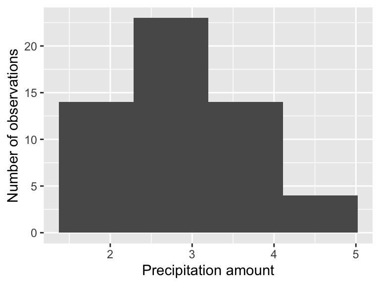
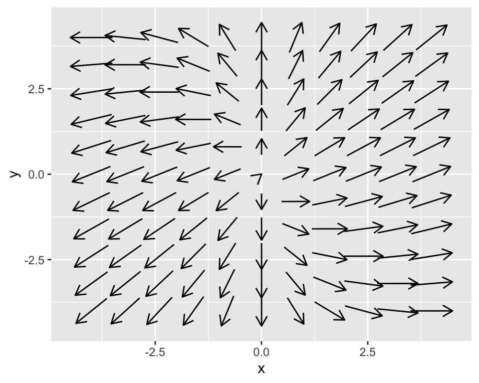
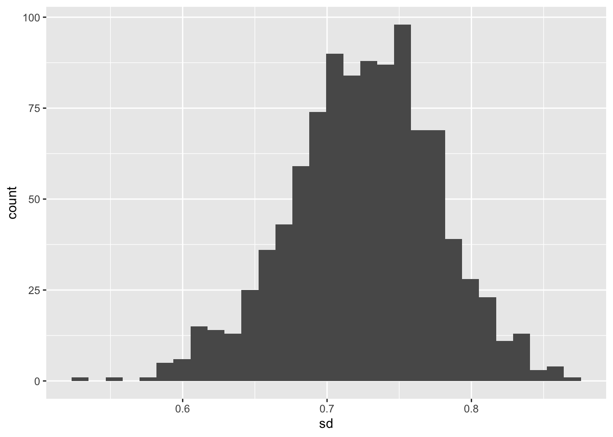

2.3 Sampling the empirical distirbution
We can apply this same principle to measurements. The distribution of measurements can be called an empirical distribution. To examine data, we will use weather and precipitation today, which is collected in a cooperative network of local observers. These stations come from the Twin Cities of Minneapolis and St. Paul and surrounding suburbs:
| date | time | station_id | station_name | precip |
|---|---|---|---|---|
| 9/21/2018 | 05:00:00 | MN-HN-52 | Champlin 1.8 ESE | 2.73 |
| 9/21/2018 | 05:00:00 | MN-HN-78 | Richfield 1.9 WNW | 4.27 |
| 9/21/2018 | 05:00:00 | MN-HN-154 | Dayton 3.2 SE | 2.25 |
| 9/21/2018 | 05:00:00 | MN-HN-156 | Minnetonka 1.8 SW | 3.41 |
| 9/21/2018 | 05:15:00 | MN-HN-148 | Maple Grove 4.0 SW | 2.21 |
| 9/21/2018 | 06:00:00 | MN-HN-37 | Plymouth 0.8 SSE | 2.70 |
| 9/21/2018 | 06:00:00 | MN-HN-39 | Rockford 0.5 NE | 2.55 |
| 9/21/2018 | 06:00:00 | MN-HN-49 | Maple Grove 2.4 E | 2.56 |
| 9/21/2018 | 06:00:00 | MN-HN-185 | Long Lake 1.7 NNW | 2.05 |
| 9/21/2018 | 06:03:00 | MN-HN-220 | Minnetrista 3.9 SW | 1.73 |
While it is great to have only one value is reported for precipitation amounts, so the question is: What could be a representative number for the average amount of rainfall received for this storm?
Let \(R\) be the distribution of rainfall in the Twin Cities. The measurements are samples of this distribution. One way to say is that the average of the precipitation data (2.8872727 inches) is good enough, but what we don’t know is how well that average value approximates the expected value of the distribution for \(R\).
As an exploratory data analysis approach, one way we can do this is by a histogram of the precipitation measurements:
ggplot() +
geom_histogram(data = precipitation, aes(x = precip),bins = 4) +
labs(x='Precipitation amount',
y='Number of observations')## Warning: Removed 1 rows containing non-finite values (stat_bin).
The precipitation measurement illustrates the difference between a population (the true distribution of measurements) and a sample (what people observe). The histogram shown is called the empirical distribution of these data. For the purposes we get here, we are after what is called the sample statistic, which is usually the mean or standard deviation.
This distribution looks bimodal with a lot of variability. How could we account for the representative value of the distribution \(R\)? Each of the entries in the precipitation data frame represents a measurement made by a particular observer. To get the true distribution we would need to add more observers (such as when we sampled the normal distribution), but that isn’t realistic as the event has already passed.
The way around this is a bootstrap sample, which is a sample of the original dataset with replacement. Sampling with replacement is the process of remaking a dataset, but you get to reselect from the entire dataset at the same time. This is easily done with the command slice_sample:
p_new <- slice_sample(precipitation,prop=1, replace = TRUE)What this code does is sample the precipitation data frame with replacement (replace = TRUE). Here is how replacement works: say you have each of the precipitation measurements written on a piece of paper in a hat. You draw one slip of paper, record the measurement, and then replace that slip of paper back in the hat to draw again, until you have as many measurements as the original data frame (in this case this is 56. The command prop=1 means that we are sampling 100% of the precipitation data frame.
One thing that we can do is compute the mean (average) and the standard deviation of the sample:
slice_sample(precipitation,prop=1, replace = TRUE) %>%
summarize(mean = mean(precip,na.rm=TRUE),
sd = sd(precip,na.rm=TRUE))## # A tibble: 1 x 2
## mean sd
## <dbl> <dbl>
## 1 2.94 0.745Let’s break this code down:
- The command
summarizeis collapsing theprecipitationdata frame and computes the mean and the standard deviationsdof the columnprecip. We have the commandna.rm=TRUEto remove anyNAvalues that may affect the computation. - How this code runs is first to do the sampling, and then the summary.
If we want to run this multiple times we need some more powerful functionality here. The purrr package has the wonderful command map, which allows you to quickly iterate through a list quickly.
map_df(1:10 ,
~(
slice_sample(precipitation,prop=1, replace = TRUE) %>%
summarize(mean = mean(precip,na.rm=TRUE),
sd = sd(precip,na.rm=TRUE))
) # Close off the tilde ~ ()
) # Close off the map_df## # A tibble: 10 x 2
## mean sd
## <dbl> <dbl>
## 1 2.70 0.706
## 2 2.80 0.721
## 3 2.68 0.570
## 4 2.81 0.790
## 5 2.83 0.715
## 6 3.02 0.734
## 7 2.83 0.703
## 8 3.00 0.714
## 9 3.03 0.766
## 10 2.96 0.754What should be returned is a dataframe with columns mean and sd that represents the mean and standard deviation of each bootstrap sample. The process of randomly sampling a dataset is called bootstraping.
Let’s review this code bit by bit. Notice that I’ve written this on multiple lines to aid in reading. The basic structure is map_df(1:N,~(COMMANDS)), where N is the number of times you want to run your code (in this case N=10). The second part ~(COMMANDS) lists the different commands we want to re-run (in this case it is our mean and standard deviation of the data frame).
I can appreciate this programming might be a little tricky to understand and follow - don’t worry - the goal is to give you a tool that you can easily adapt to a situation. What I would do in a use-case scenario is to first get a working example (where you compute the mean and standard deviation), and then use the map_df to return your result.
The final step would be to visualize the mean and the standard deviation. Let’s re-run our example and then plot:
bootstrap_samples <- map_df(1:1000 ,
~(
slice_sample(precipitation,prop=1, replace = TRUE) %>%
summarize(mean = mean(precip,na.rm=TRUE),
sd = sd(precip,na.rm=TRUE))
) # Close off the tilde ~ ()
) # Close off the map_df
# Now make the histogram plots for the mean and standard deviation:
ggplot(bootstrap_samples) +
geom_histogram(aes(x=mean))## `stat_bin()` using `bins = 30`. Pick better value with `binwidth`.
ggplot(bootstrap_samples) +
geom_histogram(aes(x=sd))## `stat_bin()` using `bins = 30`. Pick better value with `binwidth`.
Excellent! This is shaping up nicely. Once we have sampled as much we want, then investigate the distribution of the computed sample statistics (we call this the sampling distribution). It turns out that sample statistics (such as the mean or the standard deviation) will in the long run - approximate the true distribution statistic (such as the mean or standard deviation). This is an example of a non-parametric bootstrap - meaning we are not trying to force a priori a distribution onto the data.
One last task: summarize the distribution of bootstrap means and standard deviations. We will do this using a confidence interval, which comes from the percentiles of the distribution. Let’s take a look at the distribution of bootstrap means. The 2.5 percentile is approximately 2.7 inches. This means 2.5% of the distribution is at 2.7 inches or less. The median (50th percentile) is 2.9, so half of the distribution for is 2.9 inches or less. The 97.5 percentile is approximately 3.1, so 97.5% of the distribution is 3.1 inches or less. If we take the difference between 2.5% and 97.5% that is 95%, so 95% of the distribution is contained between 2.7 and 3.1 inches. If we are using the bootstrap mean, we would report that the median rainfall is 2.9 with a 95% confidence interval of 2.7 to 3.1. The confidence interval to give some indication of the uncertainty in the measurements.
Here is how we would compute these different statistics using the quantile command, which we need to do separately for the mean and standard deviation:
quantile(bootstrap_samples$mean,probs=c(0.025,0.5,.975))## 2.5% 50% 97.5%
## 2.691068 2.889911 3.071718quantile(bootstrap_samples$sd,probs=c(0.025,0.5,.975))## 2.5% 50% 97.5%
## 0.6157899 0.7272193 0.8230154Notice how we using the probs=c(0.025,0.5,.975) command to compute the different quantiles - they need to be scaled between 0 and 1.
This code works through the bootstrap for 100 samples.